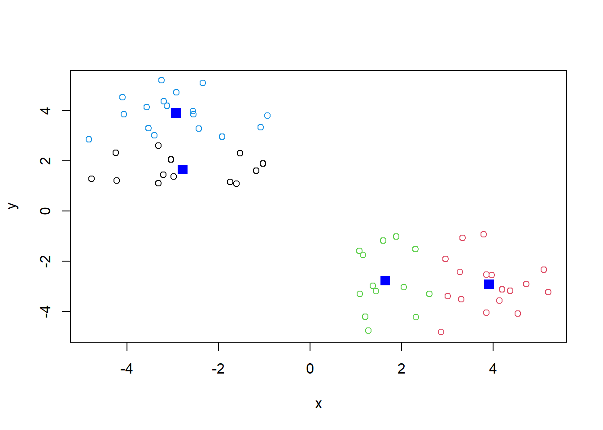

x <- rnorm(3000, 3)
# Random distribution of numbers, in a normal distribution
hist(x)#This one is centered around 0
# Adding *, 3* results in the center of the histogram moving to 3, instead of 0 which is the defaultLet’s make up some data to cluster.
x <- rnorm(3000, 3)
# Random distribution of numbers, in a normal distribution
hist(x)#This one is centered around 0
# Adding *, 3* results in the center of the histogram moving to 3, instead of 0 which is the defaultOne set clustered around +3 and one around -3
rnorm(30, 3) [1] 2.3351417 0.7254616 3.4084687 3.7306991 1.9215833 4.7802924 3.9803508
[8] 3.5681265 2.6777823 3.0465746 3.0433098 3.9289648 3.5719493 3.2355545
[15] 2.7221800 1.7015423 3.2742841 1.5607325 1.2422090 2.8314249 2.1193074
[22] 1.8846900 0.6926873 3.8010385 2.8892154 2.8892585 3.5067233 2.2061759
[29] 2.3153485 4.5148514rnorm(30, -3) [1] -3.8152317 -2.6438622 -3.0821572 -2.9120344 -3.2620368 0.1870563
[7] -0.5006406 -1.9191110 -2.8884862 -2.4835380 -3.7106280 -3.0680402
[13] -3.5354640 -4.8138836 -1.7959178 -1.4762139 -2.1587159 -2.0615858
[19] -3.5733202 -4.5991320 -0.8778833 -2.6893661 -4.5346422 -3.1531604
[25] -2.2475632 -2.2702751 -5.3197845 -1.3844678 -3.5143040 -4.3280771Plot x colored by the kmeans cluster assignment and add cluster centers as blue points
tmp <- c(rnorm(30, -3), rnorm(30,3))
x <- cbind(x=tmp, y=rev(tmp))
# rev - reverses the vector
# colors can also be numbers, 1 is black, 2 is red, etc
# cluster is indicated by 'cluster' so you can ask each to be colored differently
plot(x)#plot(x, col=x$cluster)
plot(x, col=c("blue", "brown"))# colors the dots alternating blue and brown, not very helpful
plot(x, col=c(rep(1,30), rep(2,30)))Q. The function to do k-means clustering in base R is called ‘kmeans()’. We give this our input data for clustering the the number of clusters we want ‘centers’.
km <- kmeans(x, centers=4, nstart = 20)
kmK-means clustering with 4 clusters of sizes 13, 17, 13, 17
Cluster means:
x y
1 -2.783097 1.646266
2 3.915537 -2.928688
3 1.646266 -2.783097
4 -2.928688 3.915537
Clustering vector:
[1] 4 1 4 1 1 4 4 4 4 4 4 4 4 4 1 1 1 1 1 1 4 1 4 4 1 1 4 4 4 1 3 2 2 2 3 3 2 2
[39] 3 2 3 3 3 3 3 3 2 2 2 2 2 2 2 2 2 3 3 2 3 2
Within cluster sum of squares by cluster:
[1] 22.04804 25.26566 22.04804 25.26566
(between_SS / total_SS = 92.0 %)
Available components:
[1] "cluster" "centers" "totss" "withinss" "tot.withinss"
[6] "betweenss" "size" "iter" "ifault" # kmeans() needs two arguments, x and centers
# nstart if centers is a number, how many random sets should be chosen, not sure what that means
# clustering vector is which cluster the item is in, I'm not really sure what it means
# Always uses euclidean distance matrix(something about hypotenuses)km$size[1] 13 17 13 17Q. What component of your result object
km$cluster [1] 4 1 4 1 1 4 4 4 4 4 4 4 4 4 1 1 1 1 1 1 4 1 4 4 1 1 4 4 4 1 3 2 2 2 3 3 2 2
[39] 3 2 3 3 3 3 3 3 2 2 2 2 2 2 2 2 2 3 3 2 3 2kmK-means clustering with 4 clusters of sizes 13, 17, 13, 17
Cluster means:
x y
1 -2.783097 1.646266
2 3.915537 -2.928688
3 1.646266 -2.783097
4 -2.928688 3.915537
Clustering vector:
[1] 4 1 4 1 1 4 4 4 4 4 4 4 4 4 1 1 1 1 1 1 4 1 4 4 1 1 4 4 4 1 3 2 2 2 3 3 2 2
[39] 3 2 3 3 3 3 3 3 2 2 2 2 2 2 2 2 2 3 3 2 3 2
Within cluster sum of squares by cluster:
[1] 22.04804 25.26566 22.04804 25.26566
(between_SS / total_SS = 92.0 %)
Available components:
[1] "cluster" "centers" "totss" "withinss" "tot.withinss"
[6] "betweenss" "size" "iter" "ifault" More plot coloring
plot(x, col=km$cluster)
points(km$centers, col="blue", pch=15, cex=1.5)
# pch made a square
# cex determines size of the pointsThe ‘hclust()’ function performs hierarchical clustering. The big advantage here is I don’t need to tell it “k” the number of clusters To run ’hclust()’I need to provide a distance matrix as input (not the original data)
hc <- hclust(dist(x))
#only d (the dissimilarity structure) is a needed argument for this function
#function computes distance between the rows of data, only needs the argument x
#euclidean distance matrixplot(hc)
abline(h=8, col="red", lty=2)Pay attention the the lines going across in the dendrograms Shows structure in the data
To get my “main” result (cluster membership) I want to “cut” this tree to yield “branches”
cutree(hc, h=8) [1] 1 1 1 1 1 1 1 1 1 1 1 1 1 1 1 1 1 1 1 1 1 1 1 1 1 1 1 1 1 1 2 2 2 2 2 2 2 2
[39] 2 2 2 2 2 2 2 2 2 2 2 2 2 2 2 2 2 2 2 2 2 2# Cuts a tree, e.g., as resulting from hclust, into several groups either by specifying the desired number(s) of groups or the cut height(s)More often we will use ‘cutree()’ with k=2 for example
grps <- cutree(hc, k=3)
# k=2 : give me a cut to yield 2 treesMake a plot of our ’hclust()” results ie our data colored by color assignment!
plot(x, col=grps)family of multivariate analysis methods pc1 will capture more variance than pc2
url <- "https://tinyurl.com/UK-foods"
x <- read.csv(url, row.names=1)Check the data! Always check the data!
head(x) England Wales Scotland N.Ireland
Cheese 105 103 103 66
Carcass_meat 245 227 242 267
Other_meat 685 803 750 586
Fish 147 160 122 93
Fats_and_oils 193 235 184 209
Sugars 156 175 147 139nrow(x)[1] 17ncol(x)[1] 4dim(x)[1] 17 4rownames(x) <- x[,1] x <- x[,-1] head(x) - Don’t use this, this just deletes the column, eventually you get an error - What we want to do is change the list of foods to be the title of the rows
x <- read.csv(url, row.names=1)
head(x) England Wales Scotland N.Ireland
Cheese 105 103 103 66
Carcass_meat 245 227 242 267
Other_meat 685 803 750 586
Fish 147 160 122 93
Fats_and_oils 193 235 184 209
Sugars 156 175 147 139dim(x)[1] 17 4I prefer the second approach, ‘row.names=1’ because it explicitly states that the first row is just the name of row. The first approach just deletes a row, and if the code is run again, the first row will be deleted again, resulting in a loss of data.
Explore the data, basically plot, then plot again.
barplot(as.matrix(x), beside=T, col=rainbow(nrow(x)))
To change the plot above into a stacked bar plot:
barplot(as.matrix(x), beside=F, col=rainbow(nrow(x)))
Instead of placing the bars beside each other (beside=T), they are placed on top of one another (beside=F)
A “pairs” plot is somewhat useful, but there is a lot of repetition.
pairs(x, col=rainbow(10), pch=16)
log2(20/10)[1] 1We use log2 because it has to do with doubling. (Doubling in biology is interesting?)
The blue dot, which is alcohol drinks I think, is different from the other countries of the UK.
The main function in base R to do PCA is called ‘prcomp()’. One issue with the ‘prcomp()’ function is that it expects the transpose of our data as input.
pca <- prcomp(t(x))
summary(pca)Importance of components:
PC1 PC2 PC3 PC4
Standard deviation 324.1502 212.7478 73.87622 4.189e-14
Proportion of Variance 0.6744 0.2905 0.03503 0.000e+00
Cumulative Proportion 0.6744 0.9650 1.00000 1.000e+00Cumulative proportion, adds the PCs across the row, tells you how much of the data is captured.
The object returned by ‘prcomp()’ has our results that include a $Food component. This is our “scores” along the PCs (ie the plot of our data along the new PC axis).
plot(pca$x[,1], pca$x[,2], xlab="PC1", ylab="PC2", xlim=c(-270,500))
text(pca$x[,1], pca$x[,2], colnames(x))
plot(pca$x[,1], pca$x[,2],
xlab="PC1", ylab="PC2",
col=c("orange", "red", "blue", "darkgreen",
pch=16))Variation in the original data
v <- round( pca$sdev^2/sum(pca$sdev^2) * 100 )
v[1] 67 29 4 0Coverage of the PCA (I think)
z <- summary(pca)
z$importance PC1 PC2 PC3 PC4
Standard deviation 324.15019 212.74780 73.87622 4.188568e-14
Proportion of Variance 0.67444 0.29052 0.03503 0.000000e+00
Cumulative Proportion 0.67444 0.96497 1.00000 1.000000e+00Bar graph of variance
barplot(v, xlab="Principal Component", ylab="Percent Variation")
Consider the influence of the original variables on the PCAs
par(mar=c(10, 3, 0.35, 0))
barplot( pca$rotation[,1], las=2 )
par(mar=c(10, 3, 0.35, 0))
barplot( pca$rotation[,2], las=2 )